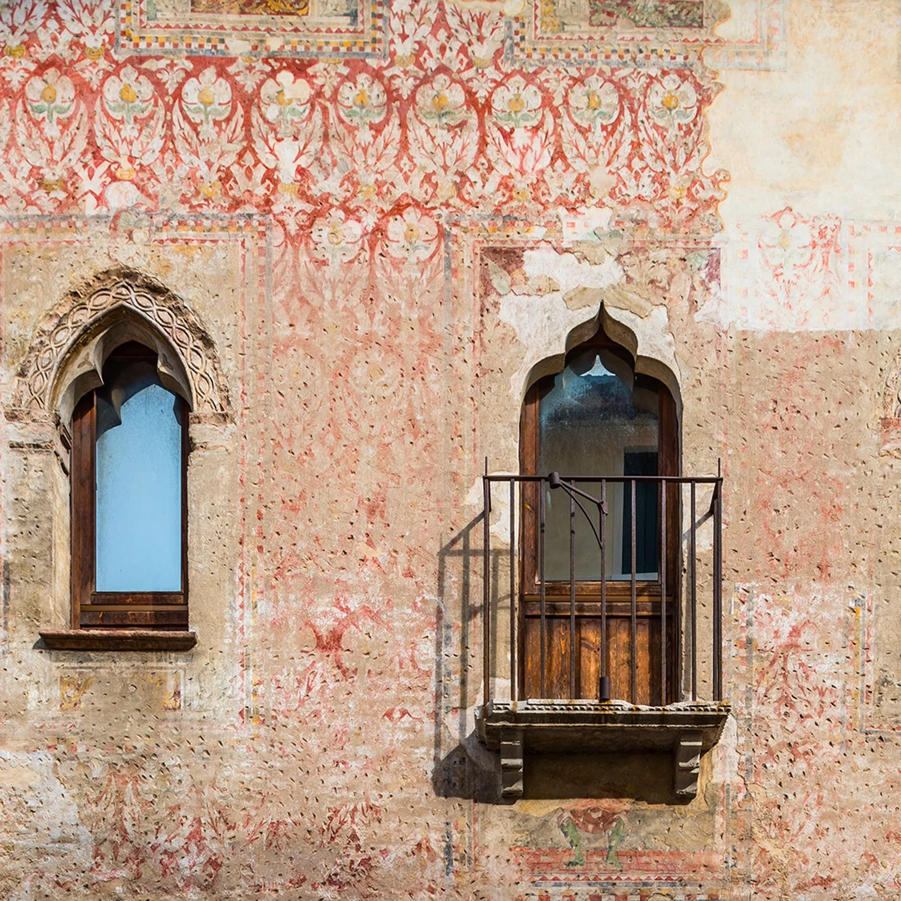
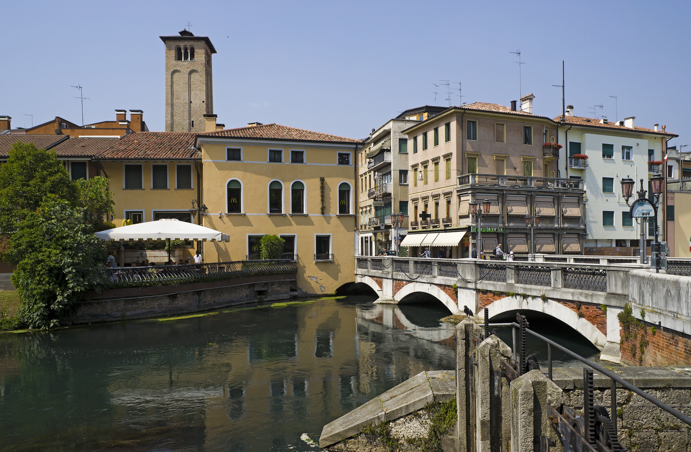

While there are several regional disputes over the paternity of this dessert, the most solid historical version places the birth of Tiramisù exactly in Treviso between the late 1960s and early 1970s. The original recipe was reportedly perfected at the restaurant "Le Beccherie" by the owner, Ada Campeol, alongside chef Roberto Linguanotto. The inspiration came from a local rural tradition called "sbatudin": an energy-boosting mixture of egg yolk whipped with sugar that grandmothers prepared for children, the elderly, or newlyweds. The addition of mascarpone, coffee, and ladyfingers transformed this home remedy into the most famous Italian dessert in the world. In 2010, the recipe was officially certified by the Italian Academy of Cuisine to preserve its Trevisan authenticity.

Walking through the center of Treviso is like flipping through a book of Medieval and Renaissance art. Unlike many other cities where decoration was reserved for the interior of palaces, it was a custom in Treviso to fresco the external facades of private homes. This tradition, born in the 13th century and flourishing in the 16th, served a dual purpose: protecting the porous bricks from the humidity of the canals and showcasing the wealth and culture of the resident family. Today, despite bombings and the erosion of time, hundreds of buildings still preserve decorations featuring faux-brick patterns, geometric motifs, mythological scenes, or colorful damasks. It is precisely because of this characteristic that Treviso earned the nickname "Urbs Picta" (Painted City). Strolling along Via Calmaggiore or near the Buranelli canal, you only need to look up to notice details that transform a simple street into a public, free art gallery.

An aspect that defines Treviso's identity, but is often misunderstood, is its complex water network. The city is not by the sea, but stands at the confluence of two main rivers: the Sile, one of the longest resurgence rivers in Europe, and the Botteniga. Just before entering the city, the Botteniga is divided into three main branches (Cagnan Grande, Cagnan Medio or Buranelli, and Cagnan della Roggia) through a system of locks designed in the 16th century by the architect Fra' Giocondo. These canals did not just have an aesthetic or defensive function; they were the economic engine of the city. They powered the wheels of watermills (some of which are still visible and functional today near the Fish Market) and allowed for the transport of goods toward Venice. The Sile, in particular, is a calm, crystal-clear river that skirts the southern walls, creating a unique natural ecosystem that allows you to transition in just a few steps from the dense medieval historic center to a protected natural oasis.